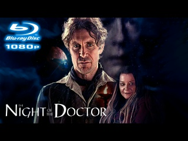
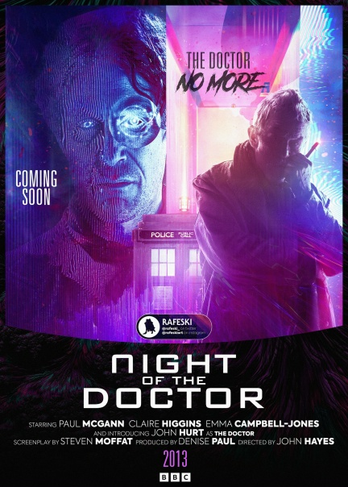
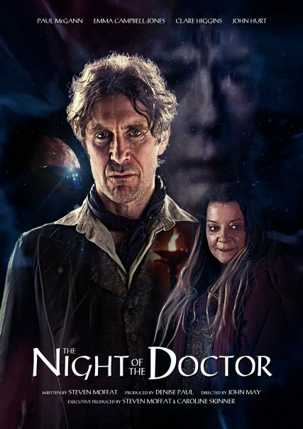

The Night of the Doctor
мини-эпизод
14 ноября 2013
Формат: 7-минутный эпизод
| Варианты озвучек: | * MVO BaibaKo |
|---|---|
| Скачивание и просмотр: |
Здесь была показана регенерация Восьмого Доктора - момент, который долгое время всех интересовал, однако регенерировал он не в Девятого, как подразумевалось ещё в 2005 году, а в ранее неизвестное воплощение (впервые показанное в финале 7 сезона), которое не входит в нумерацию, потому что он отказался от имени Доктор и сражался на Последней Великой Войне Времени.

